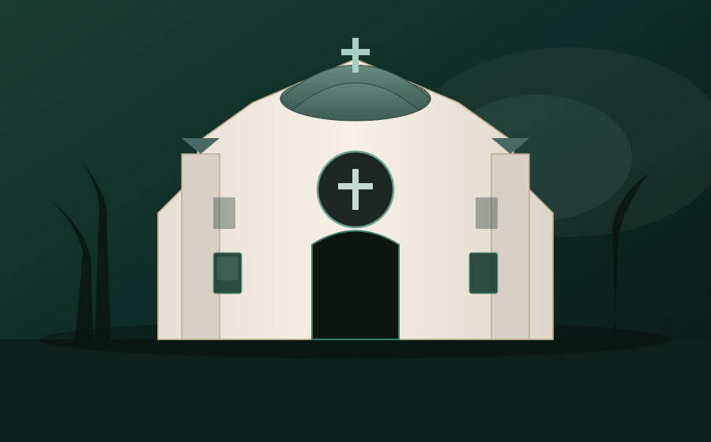

Home / About
Our story
St. George has been venerated in Kerala for centuries as a courageous witness to Christ. Our parish in Palapuram carries that legacy in the Syro-Malabar tradition—Eastern liturgy, Indian soil, universal Church.
Who we are
St. George Church, Palapuram is a parish of the Syro-Malabar Catholic Church, part of the Archdiocese of Thrissur. We are fully in communion with the Holy Father and celebrate the Holy Qurbana according to the Chaldean-Syriac liturgical heritage received by the Church in India.
Our patron, St. George, inspires us to stand firm in faith. Together with the Blessed Virgin Mary, Mother of the Church, we seek to be a community of prayer, charity, and joyful evangelisation in Palapuram and beyond.
Mission
We worship God in spirit and truth, form disciples through catechesis in Malayalam and English, care for the poor, and welcome every pilgrim who climbs the steps of our church.

Belonging
New to the area, returning to the sacraments, or discerning Catholic initiation? Begin with Holy Qurbana or Mass, meet the vicar after liturgy, or write to the parish office for parish registration and family census.